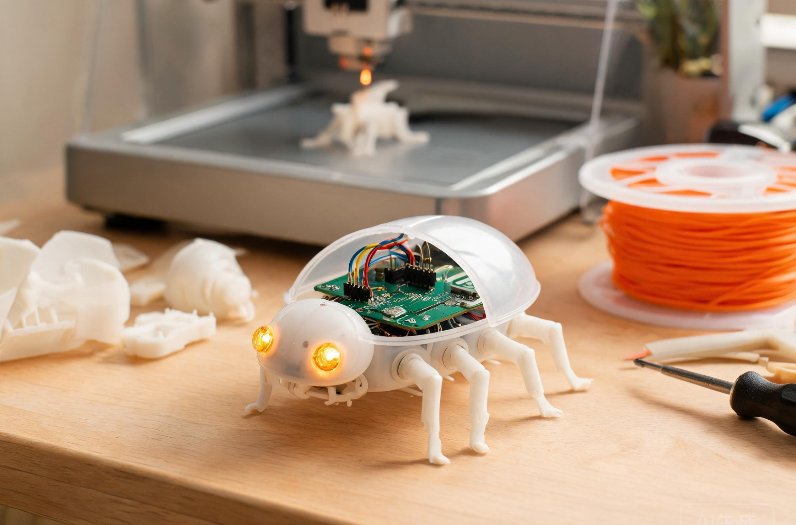

创智实验室 · Level 3 进阶期 · 三部曲之三
BeetleBot活过来的甲虫
Level 3 三部曲 · 第三部 · 智能造物项目课 · 15 次课，每次 2 小时。
3D 打印的身体 × Arduino 的大脑。期末，每个孩子造出一件自己的智能作品。
前两个学期，孩子攒下两件本事。基础期，学会造身体；实践期，学会造大脑。
进阶期，只做一件事：合体。

3D 打印的身体 × Arduino 的大脑
这学期没有新知识点要赶，全部时间用来造东西。主题孩子自己定：天亮自己唱的星座灯，拍手就转头的猫头鹰，会躲人的桌面机器人，或者一个会唱歌的礼物盒——送给妹妹的生日礼物。
期末，每个孩子带走一件真正属于自己的智能作品。它有形状，有行为，有名字。
· · ·
一整个学期，孩子反复走的，是这一条线：
定需求→画设计→打印身体→编程大脑→装配→联调→发布
需求自己定，草图自己画，工期自己排，这是项目管理。
公差差一毫米，壳就装不上。真实世界不讲差不多，这是工程思维。
传感器装歪一点，作品就「看」不见人。位置本身就是交互，这是设计思维。
身体和大脑分开都对，合起来不对，逐段排查到合，这是系统思维。
设计、制造、编程、装配、调试、发布。一个完整的工程闭环，孩子亲手走了一遍。工程师做产品，走的也是这六步。
· · ·
这学期的产出，比前两学期都重。
两件练手作品：智能夜灯，桌面宠物。各用两课，完整走一遍流程，做完带回家。
一件期末大作品：主题自己定，六课打磨，从提案一路做到发布。
一个学期下来，书桌上的作品，从「摆件」变成了「设备」。
· · ·
15 次课，每次 2 小时，一共 30 个小时，三段旅程。
第一段合体的手艺
第 1-4 课
把电路装进打印的壳。卡扣、公差、走线、传感器布局，融合造物的四门基本功。
第二段两个练手项目
第 5-9 课
智能夜灯加桌面宠物，完整走两遍流程，再复盘提炼自己的设计清单。
第三段期末大项目
第 10-15 课
自选主题，从提案到发布，六课打磨一件作品。
第 1 课第一次合体把电路装进打印的壳：卡扣、螺丝柱、开孔作品：装进壳的呼吸灯
第 2 课给打印留余量公差、壁厚、装配位作品：可拆装外壳
第 3 课电路的家走线、固定、供电作品：整洁的电路舱
第 4 课眼睛长在哪传感器布局与交互设计作品：布局原型
第 5 课项目一 · 夜灯（上）灯罩光学设计，光感逻辑作品：灯罩初版
第 6 课项目一 · 夜灯（下）呼吸灯效，组装点亮带走：智能夜灯
第 7 课项目二 · 宠物（上）造型设计，唤醒方式作品：造型初版
第 8 课项目二 · 宠物（下）声音唤醒，舵机动作带走：桌面宠物
第 9 课复盘课把两个项目提炼成自己的设计清单产出：设计清单
第 10 课期末项目 · 启动自选主题，写提案，画系统图产出：项目提案
第 11 课期末项目 · 造身体造型与结构，打印迭代产出：身体初版
第 12 课期末项目 · 编大脑传感与行为逻辑编程产出：程序初版
第 13 课期末项目 · 总装装配合体，联调排错产出：整机初版
第 14 课期末项目 · 打磨细节与稳定性，彩排演讲产出：最终版
第 15 课成果发布发布会；代码与设计提交开源社区带走：期末大作品（整套）
· · ·
创智的成果出口里，一直有一条：参与大学开源项目。
这门课，走完最后一公里。期末作品的代码和设计文件，整理后提交 Snap! 和 TurtleStitch 社区。背后是 UC Berkeley 和全球的开发者。孩子的贡献有署名，随时可查，能写进履历。
别的孩子在攒奖状，我们的孩子在攒「被真实世界用过的代码」。
· · ·
这门课，是 Level 3 三部曲的终章。
先让它飞，再让它思考，最后让它活过来。故事在这里讲完，作品从此活着。
课程信息
课名BeetleBot · 活过来的甲虫（Level 3 进阶期 · 智能造物项目课）
适合完成实践期 BeetleBrain 的孩子
课制15 次课，每次 2 小时，共 30 小时
作品两件练手作品 + 一件期末大作品，全部带回家；优秀作品提交开源社区
设备课堂 Arduino 套件 + 电脑 + 3D 打印机
咨询课程顾问 13370001068（微信同号），可约试听
海龟先学会爬，再学会飞。
然后长出大脑。最后，活过来。
别人的孩子在商店里挑玩具，
我们的孩子在实验室里造玩具。
潘老师 · 创智实验室 SparkMinds